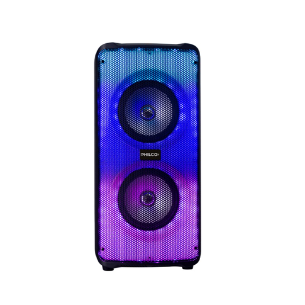

¡Bienvenidos a Repsan! Somos una empresa dedicada a ofrecer servicios de alta calidad en reparacion/venta de electrodomesticos. Nuestro enfoque se basa en la excelencia y en satisfacer las necesidades de nuestros clientes de manera efectiva y eficiente. En Repsan, nos comprometemos a brindar soluciones innovadoras y personalizadas para cada proyecto. Contamos con un equipo altamente capacitado y con amplia experiencia en la industria, que se esfuerza por superar las expectativas en cada tarea que realizamos. Nos enorgullece nuestra trayectoria, respaldada por años de experiencia y logros destacados. La calidad es uno de nuestros pilares fundamentales, y nos esforzamos por cumplir con los más altos estándares en cada etapa del proceso. Además, nos preocupamos por el medio ambiente y estamos comprometidos con la sostenibilidad, implementando prácticas eco-amigables en todas nuestras operaciones. En Repsan, valoramos las relaciones a largo plazo con nuestros clientes y nos esforzamos por lograr su satisfacción en cada proyecto. Estamos listos para trabajar contigo y brindarte soluciones confiables y de calidad. ¡Contáctanos hoy mismo y descubre cómo Repsan puede ayudarte a alcanzar tus objetivos!
¿Quienes somos?
Productos

DJP61
Precio: $25.000